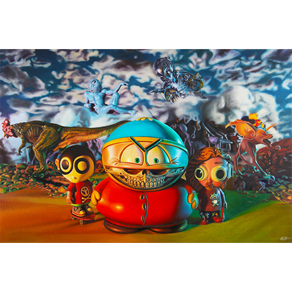

Exhibitions
South Park 20 Experience, The Paley Center for Media, Beverly Hills, California, US, August 24–September 25, 2016.
Notes
The work is documented in contemporaneous coverage of the South Park 20 Experience at The Paley Center for Media. GPen’s exhibition report identifies Ron English’s Cartman’s Cartoon Realism as an oil-on-canvas work shown in the gallery component of the exhibition, accessed April 5, 2026.